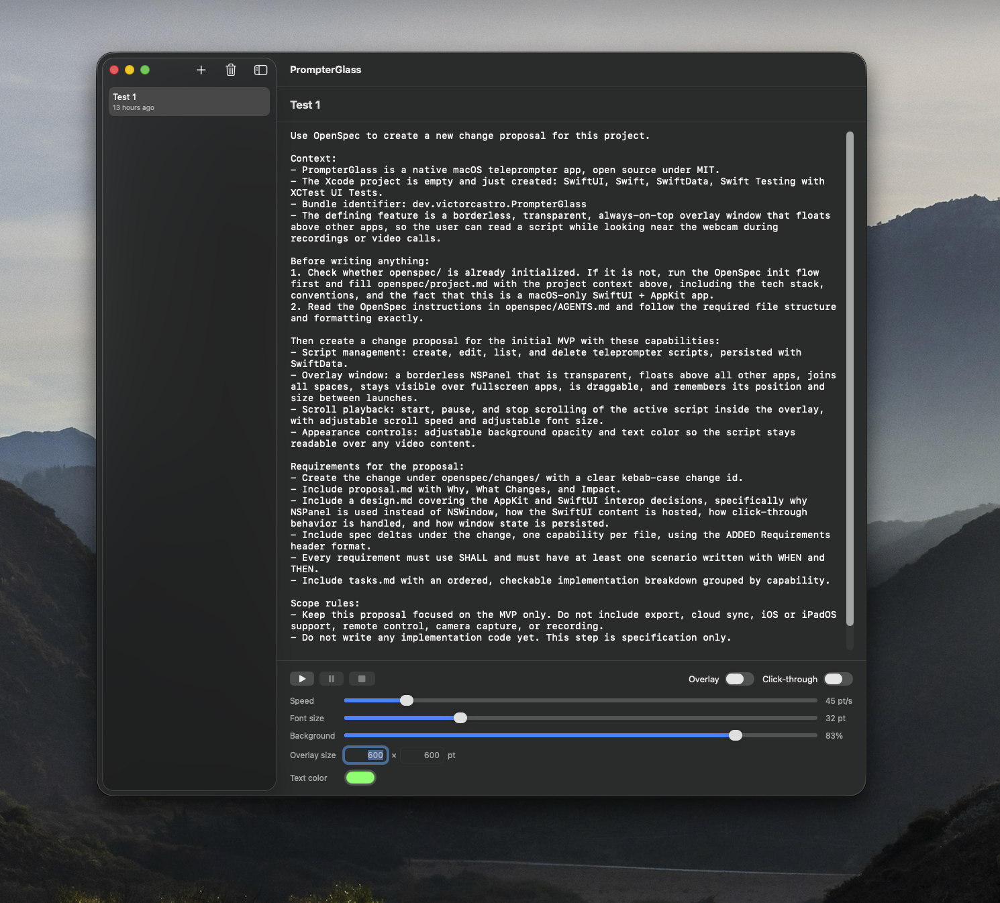
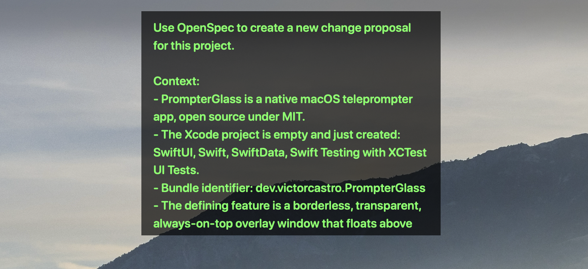

A native macOS teleprompter with a transparent floating window that stays on top of any app — read your script right next to the webcam during recordings and video calls.

The main window: write your scripts, control playback and appearance.

The floating overlay — transparent, always on top, readable over anything.